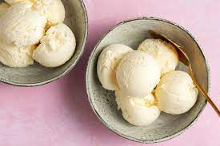

<!DOCTYPE hmtl>
<hmtl lang="eng">
<head>
        <meta charset="utf-8">
        <title> Pancakes </title>
        <link href="pancakes-style.css" rel="stylesheet"/>
    </head>
    <body>
        <h1>Vanilla Ice Cream</h1>
        

        <h2>Description</h2>
        <p>Vanilla is the king of ice cream flavors. This version without 
        eggs has a brighter, more pronounced vanilla flavor.</p>
            <div class="ingredients"> 
            <h3>Ingredients</h3>
                <ul>
                    <li>¾ cup white sugar</li>
                    <li>1 cup heavy whipping cream</li>
                    <li>2¼ cups milk</li>
                    <li>2 teaspoons vanilla extract</li>
                </ul>
            </div>

             <div class="steps">
             <h3>Steps</h3>

            <ol>
            <li>
                Stir sugar, cream, and milk into a saucepan over low heat 
                until sugar has dissolved. Heat just until mix is hot and 
                a small ring of foam appears around the edge.
            </li>
            <li>
                Transfer cream mixture to a pourable container such as a large 
                measuring cup. Stir in vanilla extract and chill mix thoroughly, 
                at least 2 hours. (Overnight is best.)
            </li>
            <li>
                Pour cold ice cream mix into an ice cream maker, turn on the machine, 
                and churn according to manufacturer's directions, 20 to 25 minutes.
            </li>
            <li>
                When ice cream is softly frozen, serve immediately or place a piece 
                of plastic wrap directly on the ice cream and place in freezer to ripen, 
                2 to 3 hours.                
            </li>
        </ol>
        
        </div>

<h3>Bon Apetit!!!</h3>

<a href="../index.html">Back to the list of recepies</a>
</body>
</hmtl>
